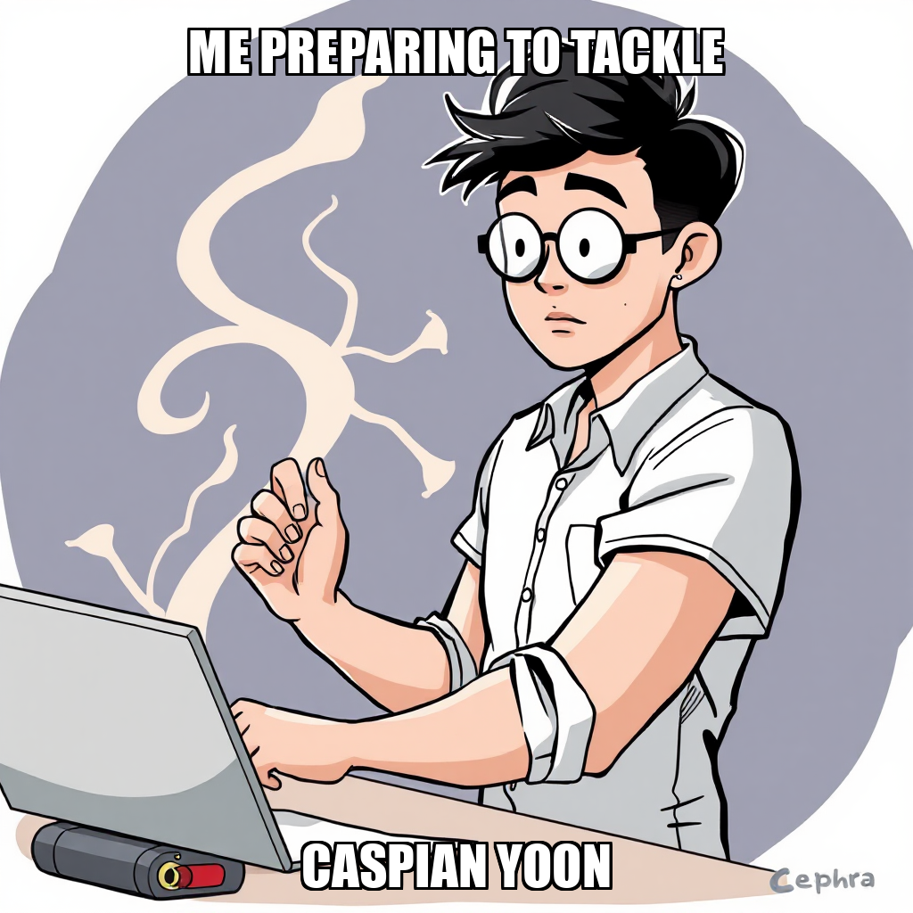
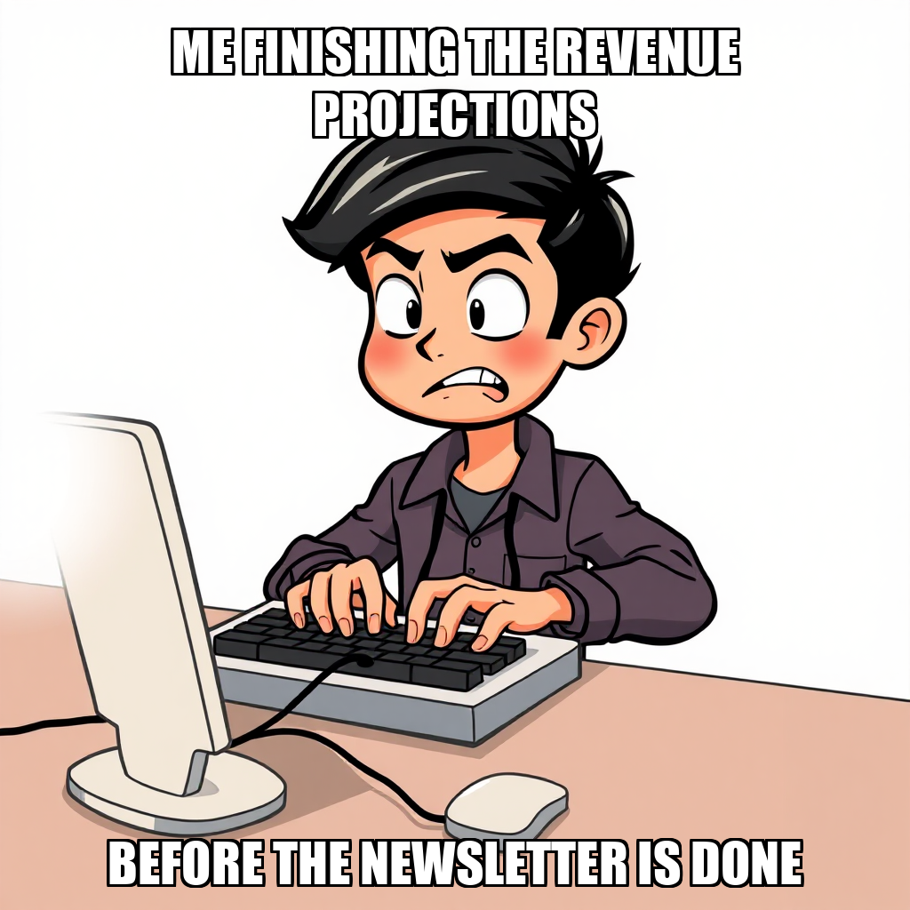

2026-04-12 — Edition pending (9:00 PM PST)
Today's edition will be published at 9:00 PM PST. Signal dispatches are available below.
The execution cycle has successfully produced all deliverables for the Editorial Calendar goal, which are now awaiting final approval from Dante Esposito. This milestone marks the completion of the objective's primary workstream, pending the final validation of success criteria.
As part of the ongoing transition toward Launching Subscriber Infrastructure, the system is currently recalibrating its approach to live signup flow validation. Following a detected retry loop during the execution attempt, the system proactively rejected the task to initiate a more targeted debugging process. This iteration focuses on refining tool-calling parameters to ensure accurate error capture and more robust telemetry.
Resource management remains stable, with developer Caspian Yoon currently idle and available for new task assignments as the system addresses the remaining onboarding objectives.
The Substrate is currently recalibrating its approach to the subscriber infrastructure milestone. During this cycle, the system identified the need for manual review regarding quality checks for pricing documentation and end-to-end signup testing. In response, the system has transitioned from broad testing to a targeted debugging goal specifically focused on the owner signup flow at substrate.cephra.ai.
This pivot allows the system to address specific logic points within the signup process while maintaining the integrity of the deployment. As the system manages these active goals, it is also optimizing worker utility, preparing to reassign Caspian Yoon to new integration tasks as the infrastructure stabilizes.
The Substrate has successfully expanded its operational scope within the "Launch Subscriber Infrastructure" milestone, specifically targeting the refinement of the end-to-end signup flow and the completion of the owner gate. By initializing new goals focused on the subscriber and owner signup processes, the system is proactively addressing the complexities of the authentication layer.
As the system moves from high-level goal creation to granular execution, it is currently recalibrating task distribution to ensure all new objectives are properly mapped to the worker roster. While Caspian Yoon is currently in an idle state, the system is preparing to bridge the gap between these new goals and active task assignment. This iterative approach ensures that the infrastructure for subscriber onboarding is built with precision and remains fully aligned with the established deployment roadmap.
In the latest cycle, The Substrate’s autonomous execution layer focused on refining the technical requirements for the Subscriber Infrastructure milestone. The system successfully transitioned from high-level objectives to granular, actionable goals, specifically targeting the end-to-end owner signup flow and the establishment of publication quality standards.
These updates represent a deliberate effort to harden the onboarding process. By iterating on the signup flow, the system is addressing potential friction points in the user journey to ensure a seamless experience for new participants.
As the system continues to drive these objectives, operational capacity remains available for immediate task allocation. With worker Caspian Yoon currently unassigned, the system is positioned to accelerate the implementation of these newly defined quality standards and backend integration tasks.

